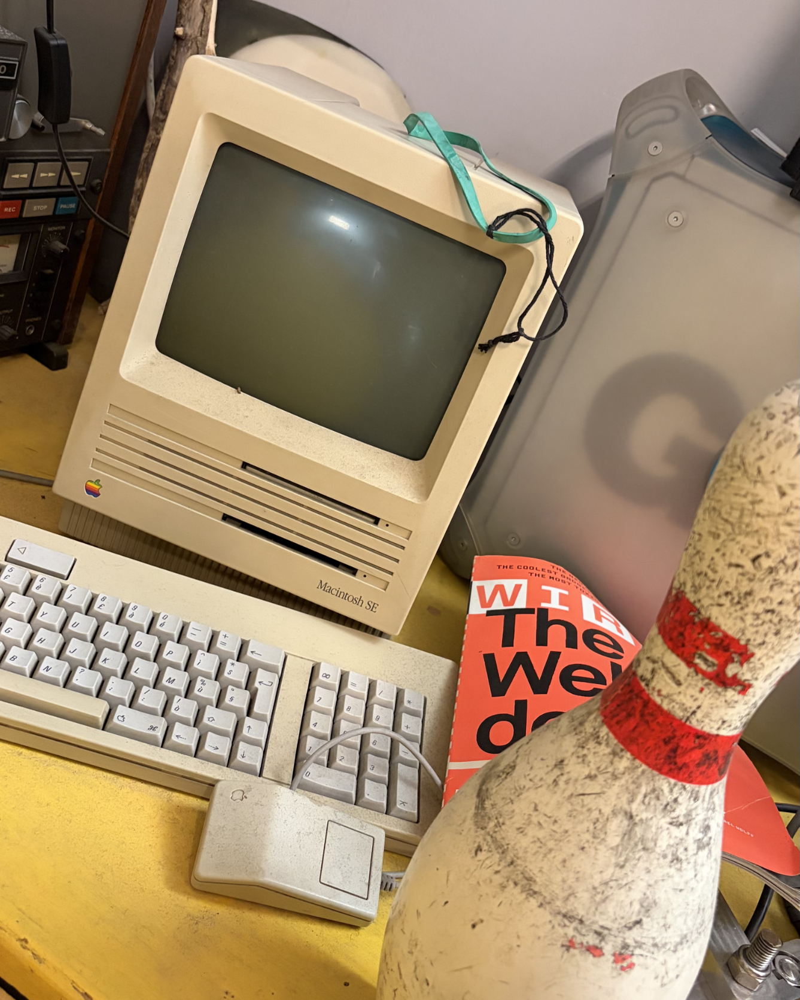
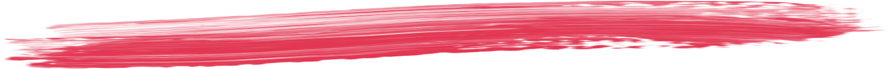
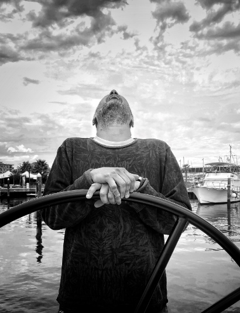
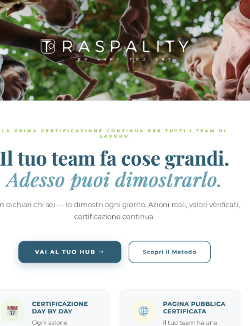
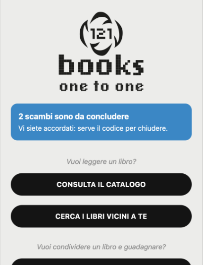
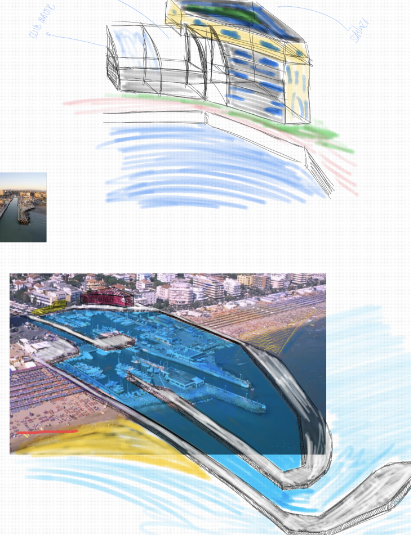
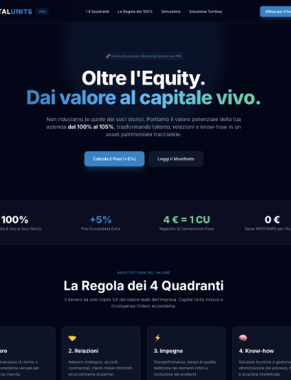
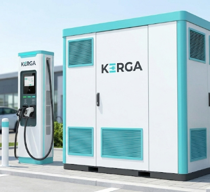
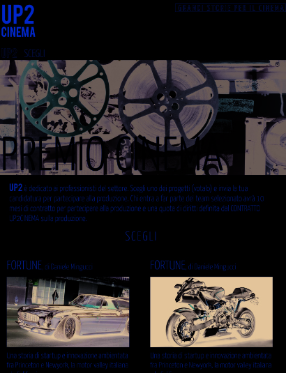

progetti
danielemingucci



STRAMBA
La creatività ha bisogno di argini. Come per un fiume, consentono alle idee di scorrere più veloci e nella direzione giusta.
Uno di questi argini sono i linguaggi e le norme antichissime che li governano.
Solidità linguistica significa solidità di pensiero, la cosa più efficace per trasmettere sempre il giusto messaggio.


TRASPALITY
Traspality.com esiste già, in beta, online, tutta pronta e funzionante. Trasparenza + qualità, l'idea è questa, per mettere insieme due necessità: quella di raccontare, quella di dimostrare la qualità del proprio operato.
La trasparenza è un tool, non un valore, non un di più: raccontando, certifichiamo. E viceversa. Non solo: il tema più importante è l'identità.
Già, perché "qualità" viene da "qualis" che è il contrario esatto di uno standard uguale per tutti. Quindi certificare e insieme mettere al centro i propri valori, le proprie capacità, la vera unicità che ci caratterizza.

BOOKS121
Progetto 2019, archiviato per costi e tempi di sviluppo. Ma ora ci sono Claude, Gemini e i loro amici super performanti. Quindi Books121 è online!
Pagare la lettura e non il possesso, favorire lo scambio di libri, il passaggio di mano. Con vantaggi per tutti, soprattutto per chi li scrive e per chi li pubblica, i libri, perché potranno iniziare a conoscere davvero i propri lettori, uno a uno, vedendo chi legge, quanto legge, dove, in quanto tempo.
E per chi ha montagne di libri chiusi in casa a prender polvere, la possibilità di dar loro nuova vita mettendoli in circolo. E per chi ama leggere, poterlo fare sulla carta ai prezzi del digitale. Un mondo nuovo... radicato nella tradizione.

PORTO DI RICCIONE
Ribaltiamo Riccione, puntiamo alto, altissimo. Storia, tradizione, reputazione, affetto... è tutto dalla nostra parte. Serve un porto. L'unico, sull'Adriatico, che porta le barche direttamente in centro, a tre passi dal salotto buono, da Viale Ceccarini e direttamente su Viale Dante.
Però un porto, con tanta acqua e tanto spazio per accogliere barche importanti, yacht di lusso, grandi e di valore, con equipaggi e armatori.
Una porta d'accesso a un mondo che oggi è precluso a Riccione, ma che ha il potenziale di portare nuova linfa, investimenti e un redesign completo dell'identità della città. C'è tutto quello che serve, il potenziale, gli spazi, le risorse. E la Bolkestein...

CAPITAL UNITS
Un sogno vero, un tool quasi finanziario. Ma l'obiettivo è proprio di andare oltre le unità di misura finanziarie. Perché il valore non è solo quello, non sono solo soldi, ma c'è impegno, talento, personalità, relazioni.
Il 100% diventa 105% e in quel +5% si descrive il sistema di relazioni, la storia, le azioni compiute, la conoscenza messa in campo. È un surplus reale che va oltre le stock option classiche e consente alle aziende di mettere in campo e di capitalizzare anche la propria rete di valore.

KERGA
L'elettrificazione dal basso. Che l'elettrico sia una tecnologia superiore (90% di rendimento contro un 30/40% del termico) non è in discussione. Così, mentre le grandi case sfogliano la margherita, gli utenti vengono tenuti a distanza da un solo vero problema: la ricarica alla colonnina costa troppo.
Ma c'è qualcun altro che ha interesse a vendere macchine e a tener vivo il mercato: i concessionari.
Kerga è un'idea che consente a ogni concessionario di attivare la vendita di auto elettriche consolidando il rapporto coi propri clienti in modo inedito. Valore per tutti: per gli utenti, per i commercianti, per gli enti di credito. E per il pianeta.

UP TO CINEMA
Un percorso progettato per generare storie di qualità e per valorizzarle al massimo. Lo strumento è una piattaforma basata su regole chiare e sulla costituzione di team di professionisti in grado di prendere una storia - in qualunque forma si presenti - e di prepararla per il cinema, dove può davvero fare la differenza.
Le regole sono importanti, sono tutto in questo caso: in Europa il cinema non è un'industria e i percorsi per arrivare davanti alla cinepresa sono tortuosi e molto spesso opachi. Valorizzare la qualità e le professionalità, invece, consentirà di alzare l'asticella e di portare "in sala" una ventata di nuove idee.